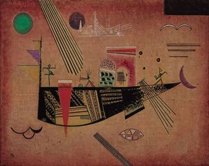

«Капризный»
Василий Кандинский, детство и юность которого прошли в приморской Одессе, на протяжении всего своего
творческого пути часто обращался к морской тематике. Лодки, корабли, паруса и разнообразные морские жители
появляются на его картинах одинаково часто в самые разные периоды творчества (1, 2, 3, 4, 5, 6, 7, 8). Не
является исключением и «Капризный», одна из поздних работ художника, центральную часть которой занимает
большой корабль, чем-то похожий на футуристическую рыбу.
